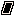
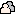
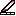
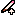
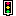

Reference
Blocks
Trains Project v1 has 9 locomotives and 32 wagons. Each entry lists the block’s parameters with their range and default, and describes exactly what the engine does.
How to read this page.
- takes time wagons keep their train waiting until they finish: gliding, turning, waiting, a speech bubble.
- instant wagons finish immediately, and the next wagon runs in the same frame.
- container wagons hold other wagons.
- Every number parameter can also take a random number, a variable, a property or the timer instead of a fixed number. The
idnext to each name is the identifier used in saved projects.
Locomotives (events)
A train starts with exactly one locomotive. Locomotives are red and live in the first tab of the depot. A train with no wagons never starts.

When ▶ is pressed start
Runs once for every placement of the character when the program starts. Clones do not run it; they have When I start as a clone instead.

When tapped tap
Runs when the player taps or clicks this character during the run. Only the top-most character under the finger is tapped.
When a button is pressed input
- key: ← → ↑ ↓ A B · default →
Runs for every character that has this train when the gamepad button (or its Mac key) goes down. It fires once per press; holding the button does not repeat. Use Wait until button held or an If to react to a held button. Using this locomotive makes the on-screen gamepad appear.

When tilted tilt
- side: left, right · default left
Runs when the iPad is tilted more than 20° to that side. On Mac, Q tilts left and E tilts right. Like buttons, it is broadcast to every character.
When bumping bump
- target: a character, any character, any wall, left / right / top / bottom wall · default any wall
Runs when this character starts touching the target. It fires once per contact; staying in contact does not repeat it, but separating and touching again does. Ghost characters bump too. Wall bumps need the walls switched on.

When a message arrives message
- colour: red, blue, yellow, green · default red
Runs when any character sends a message of this colour, including the sender itself. Unlike other events, a message restarts the train from the beginning if it is already running.
Every few seconds every
- seconds: 0.1–60, step 0.1 · default 1
Runs repeatedly while the program runs. The first run comes one interval after the start, not at the start. If the train is still busy when the timer comes round, that tick is skipped. With a random or variable interval, the next interval is read again each time.

When I start as a clone cloneStart
Runs in a newly made clone, right after a Clone wagon made it.
When hearts run out heartsEmpty
Runs when a Hearts wagon brings this character’s hearts down to 0.
Motion
Directions are forward and backward (relative to where the character faces) or up, down, left and right (fixed screen directions).

Move move takes time
- direction: forward, backward, up, down, left, right · default forward
- tiles: 0–16 · default 1
- speed: slow (2 tiles/s), normal (4 tiles/s), fast (8 tiles/s) · default normal
Glides the character smoothly by that many tiles. Moving 4 tiles at normal speed takes 1 second. Gliding sets the position frame by frame and clears any speed the character had, so it works with every body type, and gravity cannot pull the character off course mid-glide. A variable can make the distance negative, which glides the opposite way.

Kick kick instant
- direction: as for Move · default forward
- strength: 1–10 · default 5
Gives the character a physics push. Each point of strength adds 50 px/s (about 3 tiles/s) of speed to a normal-weight character. Strength 5 with gravity on is a jump of about 5 tiles. Light characters go twice as fast; heavy ones go 2.5 × slower. Kicks add up with the current speed. A fixed body cannot be kicked.

Turn turn takes time
- side: left (counter-clockwise), right (clockwise) · default left
- degrees: 0–360, step 15 · default 90
Rotates smoothly at 360° per second, so a quarter turn takes 0.25 s. Turning also changes where forward points.
Point point instant
- mode: angle, toward · default angle
- angle (angle mode): 0–359, step 15 · default 0 (right)
- target (toward mode): a character or any character · default any
Faces an absolute direction, or turns to face the nearest matching character. If two are equally near, the one created first wins. Nothing happens if no such character exists.
Go to goTo instant
- mode: tile, random, character · default tile
- x, y (tile mode): 0–15 · default 8, 8
- target (character mode): a character or any · default any
Jumps instantly. Tile goes to (x, y), clamped to the stage. Random picks a random whole tile. Character jumps onto the nearest matching character. Jumping clears any speed the character had.
Looks

Say say takes time
- text: up to 40 characters · default “Hello!”
- seconds: 0.5–10, step 0.5 · default 2
Shows a speech bubble and waits until it disappears. If the train is stopped or restarted meanwhile, the bubble goes away with it.
Costume costume instant
- mode: pick, next · default pick
- costume (pick mode): any costume · default owl
Changes the picture and keeps the colour variant. Next steps through all costumes in catalogue order and wraps around.
Colour colour instant
- mode: pick, next, random · default next
- variant (pick mode): 0–7 · default 1 (0 is the original colours)
Switches to another of the costume’s 8 colour variants. Next cycles through 0 → 7 and back to 0.
Size size takes time
- percent: 25–300, step 25 · default 150
Grows or shrinks to that size over 0.25 s. 100 % is 2 × 2 tiles. The collision shape grows with it.
Fade fade takes time
- percent: 0–100, step 10 · default 50
Animates the opacity to that value over 0.25 s. 0 is invisible and 100 is fully visible. An invisible character still collides and can still be tapped.

Pen down penDown instant
- colour: one of the 32 palette colours · default white (7)
From now on, the character draws a pixel line wherever it goes, behind all characters. Using it again with another colour changes the colour without lifting the pen.

Pen up penUp instant
Stops drawing. The lines already drawn stay.
Clear pen penClear instant
Erases every drawing on the stage, from every character. Stopping the program also clears the drawing.
Control

Wait wait takes time
- seconds: 0–30, step 0.5 · default 1
Pauses this train. Other trains keep running. Times are rounded to 1/60 s. A wait of 0 does nothing.

Repeat repeat container
- times: 0–99 · default 3
Runs the wagons inside that many times, then continues. The count is read once, when the repeat starts, and rounded to a whole number. 0 skips the body.

Forever forever container
Runs the wagons inside over and over until the program stops. Wagons placed after a forever never run. A forever with only instant wagons inside runs one pass per frame (60 per second), so it cannot freeze the app.

If if container
- condition: see conditions · default 1 = 1 (always true)
- else: on or off · default off
Checks the condition once. If it holds, runs the then branch; otherwise runs the else branch, if there is one. Then the train continues after the if.

Wait until waitUntil takes time
- condition · default 1 = 1
If the condition already holds, the train goes straight on. Otherwise the train waits, checking again every frame (60 times per second).
Send send instant
- colour: red, blue, yellow, green · default red
Broadcasts a message to every character, including this one. Every matching When a message arrives train starts, or starts over, on the next frame. The stage shows coloured rings around the sender.
Clone clone instant
Makes a copy of this character exactly as it is now: position, angle, size, opacity, costume, colour, body, weight and hearts. The clone then runs its When I start as a clone trains. Clones vanish when the program stops. At most 128 characters (placements plus clones) can exist at once; further clones are silently skipped.
Remove remove instant
Takes this character off the stage with a puff and stops all its trains immediately. A removed placement comes back when the program stops; a removed clone is gone.
Win win instant
Ends the run as a win. Every train stops, the world freezes, and confetti bursts. Then the “You win!” card offers Play again or Edit, and the WIN jingle plays.
Lose lose instant
Ends the run as a loss: a red flash with falling grey pixels, the “Game over” card, and the FAIL jingle.
Physics
The physics wagons change the character (or the world) for the rest of the run. Nothing they do is saved; stopping restores the design. Exact numbers are on How a run works.

Gravity gravity instant
- state: on, off · default on
Switches gravity for the whole world. With gravity on, physics characters fall; a fall across the whole stage takes about a second. Fixed and ghost characters never fall.
Body body instant
- type: physics, fixed, ghost · default physics
Physics: a round body that falls, bounces and pushes others. Fixed: a square, solid obstacle that nothing can push. Ghost: round, no gravity, passes through other characters but stays inside the walls and still detects touches. Joints made with Stick are kept across the change.
Mass mass instant
- level: light, normal, heavy · default heavy
Sets the weight: light is half of normal, and heavy is 2.5 × normal. Weight changes how far kicks send the character and who pushes whom in a collision.
Magnet magnet instant
- mode: attract, repel, off · default attract
Turns the character into a magnet that pulls (or pushes) every other moving character within 8 tiles. The pull gets weaker with distance. The magnet itself is not affected by its own field.
Stick stick instant
- mode: weld, hinge, unstick · default weld
Joins this character to every character it is touching right now. Weld makes them move as one rigid piece. Hinge joins them at one point, so they can swing and spin. Unstick removes all of this character’s joints. At least one of the two must be able to move.
Drag drag instant
- mode: off, x, y, both · default both
Lets the player drag this character with a finger or the mouse during the run: only sideways (x), only up and down (y), or freely. Physics characters are pulled toward the finger, push others on the way and can be flung on release. Fixed characters follow the finger exactly.
Data
There are four global number boxes, the variables A, B, C and D. All characters share them. They start at 0 on every run.

Set set instant
- variable: A–D · default A
- value: −999 to 999 · default 0
Puts a value into the variable.
Change change instant
- variable: A–D · default A
- op: + − × ÷ · default +
- value: −999 to 999 · default 1
Adds, subtracts, multiplies or divides the variable by the value. Dividing by zero leaves the variable unchanged. The result can be any number; the −999…999 limit applies only to numbers typed on the plate.
Hearts hearts instant
- amount: −10 to 10 · default −1
Adds or removes hearts. The result is kept between 0 and 10, and the stage shows a burst of hearts with the new count. Reaching 0 fires When hearts run out. The hearts property reads the current count.
Show variable showVariable instant
- variable: A–D · default A
- state: on, off · default on
Shows or hides a small tile on the stage with the variable’s name and live value, which is handy for scores and counters.
Coming from the old app
The original Trains Project had 84 separate carts. Version 3 merges them into fewer wagons with parameters:
| Old carts | Now |
|---|---|
| 4 Go + 4 Shot + GoXY | Move, Kick, Go to |
| 3 rotation carts | Turn, Point |
| 32 ON/OFF carts | Body, Mass, Magnet, Stick, Drag, Gravity |
| 3 + 3 signal carts | Send and the message locomotive |
| 9 input locomotives | The input and tilt locomotives |
| Clone tab | The When I start as a clone locomotive |